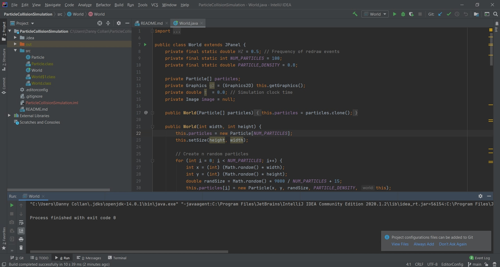
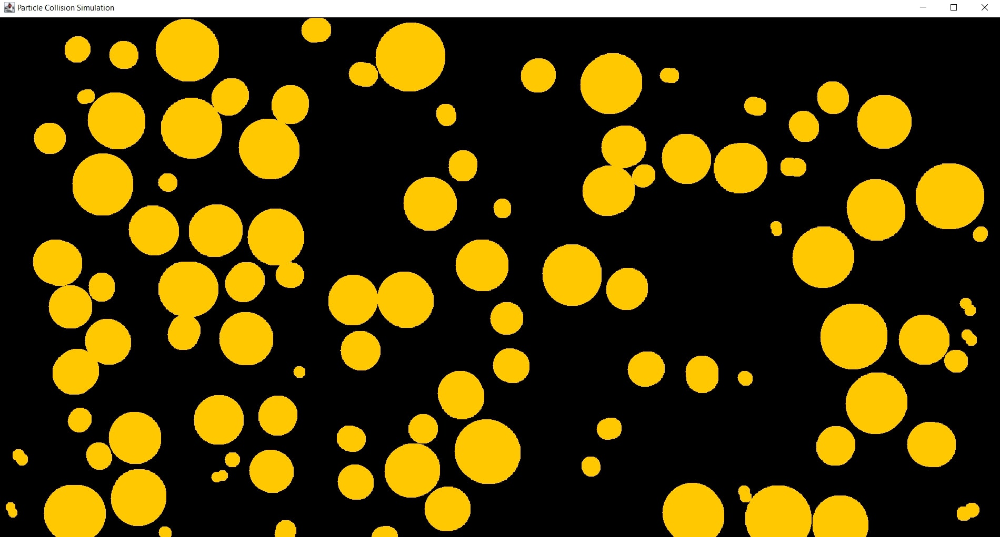

Done Using Intermediate Java
For this project, I began to work on a small science-related Java application for none other than a curiosity that arose when I was doing some research one day recently last year regarding how scientists make their advancements with modern-day technology. Learning that they look deep into particle research, I've discovered that what scientists love to do to uncover these amazing discoveries, where they always lead to reaching new milestones in various sectors, is collide particles (protons or electrons) against each other (in a related project, I've done a Python application that is based on the facility scientists use to conduct particle collision for their research).
Regarding the project shown above, this is for a simple simulation using some intermediate Java that portrays the collisions various protons make as they are bouncing off one another in a fitted screen. In the simulation, as the frequency in collisions increases, the speed will increase as well. At a certain point, as the simulation continues, the screen will begin portraying colliding protons significantly speeding past one another, at which exiting the application would now be highly recommended. Though this minor application seems to only display a graphical simulation of protons colliding against one other, I have found it to be quite an educational thing to develop and learn regarding the behavior of atoms, and even rather fun.
